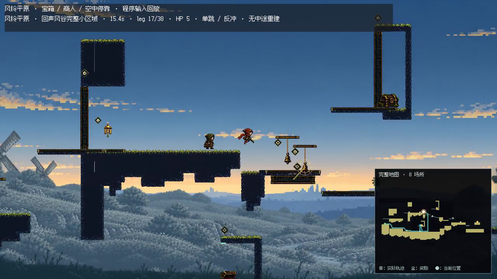
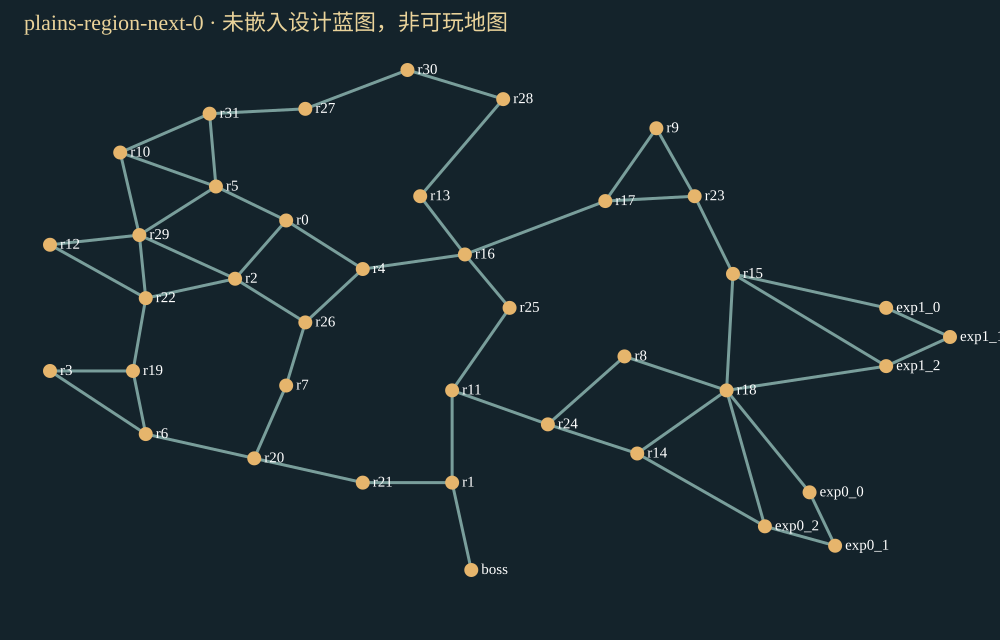

人物与移动平台的正式表现接入
上一版只迁移了部分外观。主角现在使用主游戏默认的角色安装器，移动平台启用正式材质，同时接入原动作与武器表现。
下载约29秒修正录像 · 打开修正后的Godot样品

原Godot输入回放，正常1倍60Hz，保留等待和末尾完成画面；1662帧与实际物理及最终状态一致。仍是8个Module回归样品，不能代表大图目标已经完成。
另一段：新版角色射击、命中回充和宝库回程（约34秒）
下一交付目标：超过正式地图规模的完整平原
实测当前正式平原：20–23个探索地点，58–68个Module实例。新目标至少32个核心探索地点，96–128个Module内容预算；有效路线、探索深度和独立挑战一起增加，扩大留白和重复房间不算达标。
风车群落、钟楼上廊、回声溪谷、悬索岩壁承担不同空间和玩法职责。主线保持简洁，奖励支路更深入；替代路线、汇合、宝箱、商人和已赚取的回程捷径都要有实际用途。
沿用PR #1 Director的三个固定Seed，已产出39–41个地点的Mission/Exploration蓝图。尚无真实空间布局或Module拼装，不能称为可玩大图。

这是探索职责关系图；颜色/连线不代表真实房间形状、距离、碰撞或物理可达性。其余蓝图：Seed 1 · Seed 2。
下一阶段首先解决真实Macro尺寸、端口和动作包络约束，再做内容补缺和全图物理验证；趣味提升需要实际录像和试玩判断。
实际样式回执 · 大图蓝图状态与阻塞 · 大图目标合同